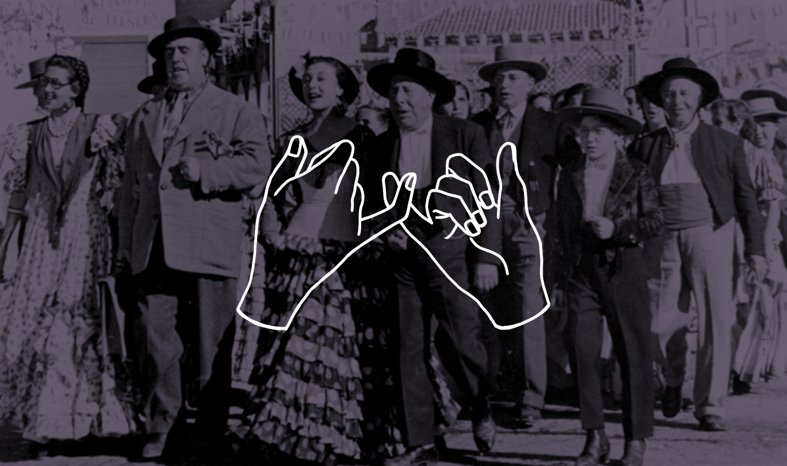

INFO

lugar y fecha
Celebramos nuestra boda el 4 de julio de 2020 en Cazalla de la Sierra, Sevilla.
DIRECCIÓN:
El Lagar de la Viña Vieja
HORARIOS:
Os esperamos a partir de las 19:00 hrs. La ceremonia empezará sobre las 19:30 hrs. Luego habrá cócktel seguido de una cena hasta las 24:00 hrs aproximadamente. Después, fiesta toda la noche!
VESTIMENTA:
Venid con las ganas y el estilo que os caracteriza pero, ante todo, comodidad que estaremos en el campo! A pesar de ser verano, por las noches refresca ya que estaremos al aire libre. Aún y todo habrá piscina para quien se anime...
RECOMENDACIONES:
Hay parking en la finca pero limitado. Recomendamos que os alojéis cerca o mejor en el propio pueblo de Cazalla. En el apartado de LUGAR tenéis más información sobre cómo llegar a Cazalla así como cosas que hacer y alojamientos. Os haremos llegar más detalles acerca de medios de transporte según se acerque la fecha.
La comida será sencilla y de campo. Cualquier alergia o sugerencia podéis hacédnosla llegar en el apartado de CONTACTO.
PRE-BODA:
Además, para los que quieran venir antes, empezaremos las festividades el viernes 3 saliendo por el pueblo. Os recomendamos llegar el viernes por la tarde para ello.
EL LUGAR

LAGAR DE VIÑA VIEJA
El Lagar de Viña Vieja es una finca ecológica situada a poco más de un kilómetro de Cazalla de la Sierra, en un entorno rural y natural característico de Sierra Morena.
La finca, en sus tiempos un viñedo, cuenta con lagar y bodega, además de tres casas acondicionadas para el turismo rural. La reciente rehabilitación del caserío y su entorno se ha hecho cuidando y resaltando sus antiguos rasgos arquitectónicos y naturales, añadiéndole confortabilidad, equipamiento y diseño actuales.
Alrededor del caserío hay una piscina natural, una alberca, jardines, corrales y explanadas a disposición de los invitados, además de un huerto, áreas de repoblación forestal y una laguna destinadas a la mejora paisajística y la potenciación de la biodiversidad.
CAZALLA DE LA SIERRA
El pueblo está incluido en el Parque Natural de la Sierra Norte, zona de media montaña que alterna las amplias dehesas con los frondosos bosques. Al atractivo de su paisaje hay que añadir la riqueza monumental de su casco urbano.El Parque Natural de la Sierra Norte se localiza al norte de la provincia de Sevilla, en una región de media montaña y forma parte de la Reserva de la Biosfera «Las Dehesas de la Sierra Morena» de la UNESCO, también forma parte de la red de Geoparques europeos.
INFORMACIÓN DE INTERÉS:
Para llegar hasta allí os recomendamos ir directamente en coche desde vuestra ciudad. Para los que vengáis desde Madrid existe la opción de llegar en ave a Sevilla y luego en transporte público hasta Cazalla. Para los que elijáis esta opción, si os vais a quedar el fin de semana entero os recomendamos alquilar coche por la zona para moveros.
Para más información consultar la página del ayuntamiento: Cómo llegar a Cazalla
ALOJAMIENTOS:
Existen diversas opciones de alojamientos en Cazalla y alrededores desde casas rurales a hoteles palacio: Mapa alojamientos en Cazalla